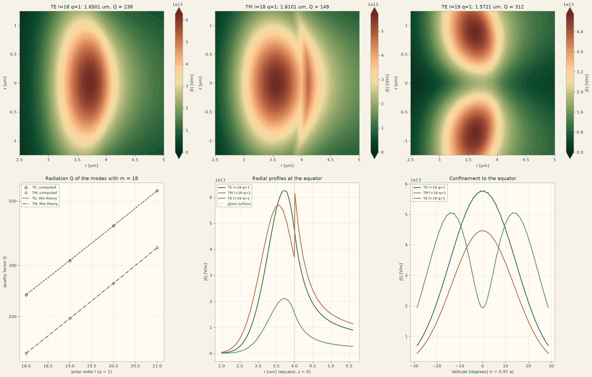
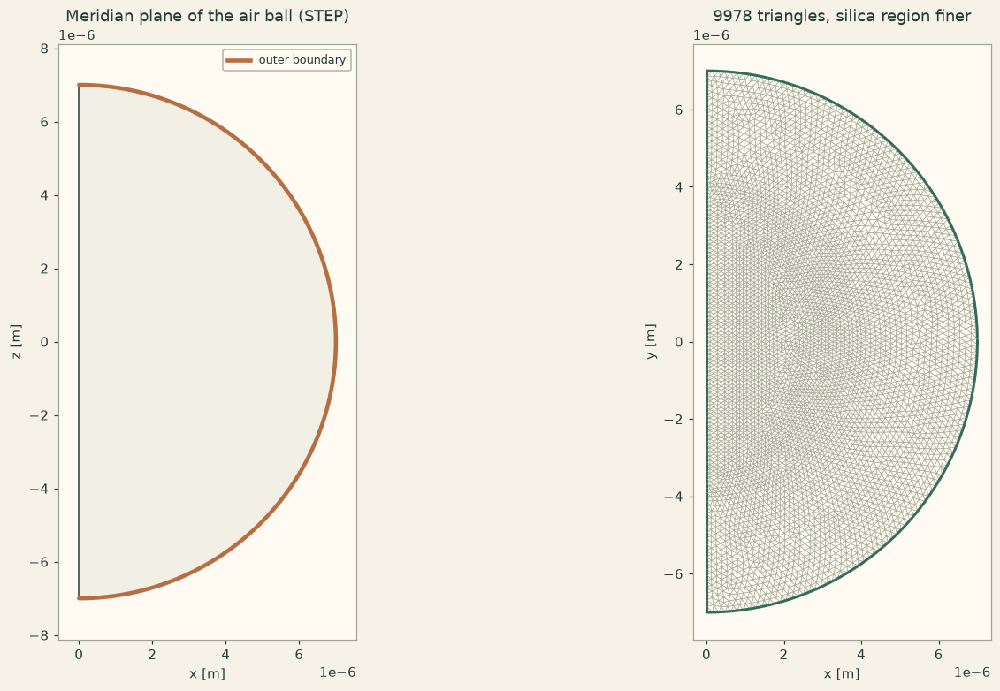

Docs › Examples › Whispering-gallery modes of a dielectric microsphere
Optics, microresonators · 2D-axisymmetric
Whispering-gallery modes of a dielectric microsphere
A 4 um silica microsphere guides light around its rim: the whispering-gallery modes of azimuthal order 18 with their wavelengths and radiation quality factors.
Run locally with OneSimulation. The example downloads are free. Running them requires an activated runtime. Runtime Alpha 0.2.1a7 · CPython 3.13 on macOS (Apple Silicon), Ubuntu 22.04 (x86-64), and Windows x64. Installation and activation · View pilot plans. Scope of the reference checks.

What it computes
OneSimulation cuts the meridian planes of an air ball and of the embedded sphere from STEP files and solves the full vector field of the azimuthal order m = 18 with Nedelec elements on the meridian, closed by a spherical perfectly matched layer; the eigenfrequency study returns every mode between 1.40 and 1.70 um as a complex frequency, from which the radiation Q follows, and modes of the absorbing layer are told apart by their small Q. The script that builds the STEP files comes with the notebook.
What it checks
All eight TE and TM modes of polar order l = 18 to 21 (radial order 1) match the complex Mie resonances: wavelengths to 7e-5, quality factors from 149 to 543 to 1.1e-4 or better (fundamental TE: 1.65007 um, Q 237.8 against 1.65018 um, Q 237.8).
Geometry
The notebook starts at the import of the CAD files whispering_gallery_microsphere.step, whispering_gallery_microsphere_sphere.step: STEP (AP242), readable by any CAD program, with the names of the faces that the boundary conditions use. Put them next to the notebook.

The geometry script
The script whispering_gallery_microsphere_geometry.py builds the geometry with the CAD objects of OneSimulation and writes the files. Change a dimension there, run it, and run the notebook again.
"""Geometry of the OneSimulation example "Whispering-gallery modes of a dielectric microsphere".
Builds, as half solids of revolution about the z axis with the CAD objects of OneSimulation, a ball
of air of radius 7 um (whispering_gallery_microsphere.step, outer surface `outer`) with a silica
microsphere of radius 4 um inside it (whispering_gallery_microsphere_sphere.step). The outer 1.2 um
of the air ball becomes the absorbing layer in the notebook.
"""
import numpy as np
from onesim.cad.d2 import Path, Profile, Segment
from onesim.cad.d3 import Revolution
um = 1e-6
sphere, air = 4 * um, 7 * um
half = lambda radius, name: Revolution(
profile=Profile(
Path(
(0.0, -radius),
(
Segment((0.0, radius), center=(0.0, 0.0), name=name),
Segment((0.0, -radius), name="axis"),
),
)
),
angle=np.pi,
).rotated((0, 0, 1), -np.pi / 2)
half(air, "outer").save("whispering_gallery_microsphere.step")
half(sphere, "surface").save("whispering_gallery_microsphere_sphere.step")The notebook
The complete notebook, cell by cell. Run it to produce the figures and the comparison printout.
A silica sphere of radius \(a=4\,\mu\)m and refractive index \(n=1.45\) in air guides light along its surface: a ray grazing the rim is totally reflected over and over and closes on itself. The resulting resonances, whispering-gallery modes, are labelled by the polar order \(l\), the azimuthal order \(m\) (\(|m|\leq l\)) and the radial order \(q\) (the number of field maxima along the radius); the fundamental modes \(l=m\), \(q=1\) are confined to a thin belt at the equator. They radiate only by tunnelling through the curved surface, so their quality factor grows exponentially with \(l\).
The sphere is a body of revolution, so each azimuthal order is a 2D problem on the meridian plane: FrequencyDomainMaxwell with the polarization Erphiz and azimuthal_mode=m solves all three field components. Space outside the sphere is closed by a spherical perfectly matched layer (spherical_pml): the radius is stretched into the complex plane beyond 5.8 \(\mu\)m, so outgoing waves decay without reflection, and the open resonator gets complex eigenfrequencies \(f=f_r-i\,f_r/(2Q)\). The layer itself supports strongly damped modes; they are recognized by their small \(Q\) and set aside.
| boundary or region | condition | |---|---| | silica sphere, \(r<4\,\mu\)m | \(\varepsilon_r=n^2=2.1025\) | | air, \(4<r<5.8\,\mu\)m | \(\varepsilon_r=1\) | | layer, \(5.8<r<7\,\mu\)m | spherical PML | | outer, \(r=7\,\mu\)m | perfect electric conductor (the field has decayed there) |
Reference. The resonances of a dielectric sphere are the poles of the Mie coefficients (C. F. Bohren and D. R. Huffman, Absorption and Scattering of Light by Small Particles, §4.4): with \(x=ka\), the Riccati-Bessel functions \(\psi_l(z)=z\,j_l(z)\) and \(\xi_l(z)=z\,h^{(1)}_l(z)\),
whose complex roots \(x\) give \(f=c\,x/(2\pi a)\) and \(Q=\operatorname{Re}x/(2|\operatorname{Im}x|)\). The asymptotic formula of C. C. Lam, P. T. Leung and K. Young (J. Opt. Soc. Am. B 9, 1585, 1992), \(nx\approx\nu+2^{-1/3}\alpha_q\nu^{1/3}-P/\sqrt{n^2-1}\) with \(\nu=l+\tfrac12\), the Airy zeros \(\alpha_q\) and \(P=n\) (TE) or \(1/n\) (TM), starts Newton's method for each root.
import numpy as np
from onesim.cad.exchange import load
from onesim.materials.electromagnetic import (
IsotropicElectromagneticMaterial,
RegionwiseElectromagneticMaterial,
spherical_pml,
)
from onesim.meshing import TriangularMesher
from onesim.numerics import Numerics
from onesim.numerics.fem import FiniteElement, Nedelec, RevolvedH1SpaceFactory
from onesim.numerics.linear import ComplexSparseDirect
from onesim.physics.electromagnetics import (
FrequencyDomainMaxwell,
PerfectElectricConductor,
electromagnetic_modes,
)
from onesim.simulation import Problem, Simulation
from onesim.visualization import plots, theme
from scipy.optimize import newton
from scipy.special import ai_zeros, spherical_jn, spherical_yn
theme.set()
light = 299792458.0
index, order = 1.45, 18Geometry and mesh
The STEP files hold half of the air ball and half of the sphere as solids of revolution; their sections with the plane \(y=0\) are half discs. The sphere is embedded in the mesh as a region with triangles of 0.11 \(\mu\)m (a tenth of the wavelength in glass); the air and the layer take 0.16 \(\mu\)m.
air = load("whispering_gallery_microsphere.step").section((0, 1, 0))
sphere = (
load("whispering_gallery_microsphere_sphere.step")
.section((0, 1, 0))
.named("silica")
)
radius, outer = sphere.size[1] / 2, air.size[1] / 2
layer = outer - 1.2e-6
mesh = TriangularMesher(
target_size=0.16e-6, embedded_regions=(sphere,), region_sizes={"silica": 0.11e-6}
).generate(air)
fig = plots.figure(1, 2, size=(13, 7))
plots.geometry(
air,
selection={"outer boundary": air.boundaries.outer},
labels=False,
title="Meridian plane of the air ball (STEP)",
ax=fig[0],
)
plots.mesh(
mesh,
groups=("all",),
legend=False,
title=f"{mesh.cell_count} triangles, silica region finer",
ax=fig[1],
)
plots.show()Model and eigenfrequency study
One model for the azimuthal order \(m=18\), solved once near the expected fundamental resonance at 1.55 \(\mu\)m; electromagnetic_modes returns every mode with a vacuum wavelength between 1.40 and 1.70 \(\mu\)m. The stretch of the layer does not depend on the frequency, so the eigenvalue problem stays linear.
glass = RegionwiseElectromagneticMaterial(
{"silica": IsotropicElectromagneticMaterial(relative_permittivity=index**2)},
default=IsotropicElectromagneticMaterial(),
)
model = FrequencyDomainMaxwell(
domain=air.domain(),
frequency=light / 1.55e-6,
material=spherical_pml(glass, layer, outer, strength=2.0),
polarization="Erphiz",
azimuthal_mode=order,
phasor_convention="exp(-i*omega*t)",
amplitude_convention="peak",
)
result = Simulation(
problem=Problem(
name="Microsphere",
geometry=air,
physics=(model,),
boundary_conditions=(
PerfectElectricConductor(physics=model, boundary=air.boundaries.outer),
),
),
mesh=mesh,
numerics=Numerics(
spatial=FiniteElement(
element=Nedelec(order=2), provider=RevolvedH1SpaceFactory()
),
linear_solver=ComplexSparseDirect(),
),
).solve_stationary()
modes = electromagnetic_modes(
result, model, frequency_range=(light / 1.70e-6, light / 1.40e-6)
)
confined = np.flatnonzero(modes.quality_factors > 20)
print(
f"{modes.mode_count} modes between 1.40 and 1.70 um: {len(confined)} confined in the sphere (Q > 20), "
f"{modes.mode_count - len(confined)} damped modes of the absorbing layer; Q from {modes.quality_factors.min():.1f} to {modes.quality_factors.max():.1f}"
)Comparison with Mie theory
For each confined mode the exact Mie resonance of the same family is found by Newton's method, started from the asymptotic formula for the polarization, polar order \(l\geq m\) and radial order \(q\) whose start lies nearest; the table lists the computed and exact wavelength and \(Q\).
psi = lambda l, z: z * spherical_jn(l, z)
dpsi = lambda l, z: spherical_jn(l, z) + z * spherical_jn(l, z, derivative=True)
xi = lambda l, z: z * (spherical_jn(l, z) + 1j * spherical_yn(l, z))
dxi = lambda l, z: (spherical_jn(l, z) + 1j * spherical_yn(l, z)) + z * (
spherical_jn(l, z, derivative=True) + 1j * spherical_yn(l, z, derivative=True)
)
condition = {
"TE": lambda l: lambda x: psi(l, index * x) * dxi(l, x)
- index * dpsi(l, index * x) * xi(l, x),
"TM": lambda l: lambda x: index * psi(l, index * x) * dxi(l, x)
- dpsi(l, index * x) * xi(l, x),
}
airy = -ai_zeros(3)[0]
start = {
(polarization, l, q): (
(l + 0.5)
+ 2 ** (-1 / 3) * airy[q - 1] * (l + 0.5) ** (1 / 3)
- (index if polarization == "TE" else 1 / index) / np.sqrt(index**2 - 1)
)
/ index
for polarization in ("TE", "TM")
for l in range(order, order + 6)
for q in (1, 2, 3)
}
computed_x = 2 * np.pi * radius * modes.frequencies / light
print(
f"{'mode':>14s} {'wavelength [um]':>16s} {'Mie [um]':>9s} {'deviation':>10s} {'Q computed':>11s} {'Q Mie':>8s} {'deviation':>10s}"
)
labels, mie = {}, {}
for i in confined:
family = min(start, key=lambda key: abs(start[key] - computed_x[i].real))
exact = newton(
condition[family[0]](family[1]),
computed_x[i].real - 1e-3j,
tol=1e-13,
maxiter=200,
)
labels[i], mie[i] = f"{family[0]} l={family[1]} q={family[2]}", exact
wavelength, reference = (
light / modes.resonance_frequencies[i],
2 * np.pi * radius / exact.real,
)
print(
f"{labels[i]:>14s} {1e6 * wavelength:16.5f} {1e6 * reference:9.5f} {wavelength / reference - 1:10.1e} "
f"{modes.quality_factors[i]:11.1f} {exact.real / (2 * abs(exact.imag)):8.1f} {modes.quality_factors[i] / (exact.real / (2 * abs(exact.imag))) - 1:10.1e}"
)Figure
Top: the magnitude of the electric field near the rim of the sphere (normalized to 1 J; the glass surface lies at \(r=4\,\mu\)m): the fundamental TE and TM modes (\(l=m\)) run in a belt at the equator, within a fraction of a wavelength of the surface; the TM field jumps at the surface, where its normal component does. The mode \(l=m+1\) has two lobes across the equator. Bottom: the quality factor against the polar order \(l\), computed and from Mie theory, grows exponentially (the tunnelling barrier widens with \(l\)); the radial profiles at the equator with the evanescent tail outside the glass; the profiles along the latitude just inside the surface.
nodes = np.asarray(mesh.coordinates)
pick = lambda polarization, l: next(
i for i in confined if labels[i] == f"{polarization} l={l} q=1"
)
shown = [pick("TE", order), pick("TM", order), pick("TE", order + 1)]
fig = plots.figure(2, 3, size=(20, 13))
for panel, i in enumerate(shown):
field = modes.mode(i).field(model.electric_field).evaluate((1 - 1e-4) * nodes)
plots.heatmap(
nodes[:, 0],
nodes[:, 1],
np.sqrt(np.sum(np.abs(field) ** 2, axis=1)),
triangles=np.asarray(mesh.cells),
length_unit="um",
xlimits=(2.5e-6, 5e-6),
ylimits=(-1.25e-6, 1.25e-6),
xlabel="r [m]",
ylabel="z [m]",
label="|E| [V/m]",
title=f"{labels[i]}: {1e6 * light / modes.resonance_frequencies[i]:.4f} um, Q = {modes.quality_factors[i]:.0f}",
ax=fig[panel],
)
family = lambda polarization: [
i for i in confined if labels[i].startswith(polarization)
]
polar = lambda members: np.array(
[int(labels[i].split("l=")[1].split()[0]) for i in members]
)
plots.line(
points={
f"{p}, computed": (polar(family(p)), modes.quality_factors[family(p)])
for p in ("TE", "TM")
},
reference={
f"{p}, Mie theory": (
polar(family(p)),
np.array([mie[i].real / (2 * abs(mie[i].imag)) for i in family(p)]),
)
for p in ("TE", "TM")
},
scale="logy",
xlabel="polar order l (q = 1)",
ylabel="quality factor Q",
title=f"Radiation Q of the modes with m = {order}",
legend="upper left",
ax=fig[3],
)
equator = np.linspace(0.5 * radius, 1.4 * radius, 300)
plots.line(
y={
labels[i]: (
1e6 * equator,
np.sqrt(
np.sum(
np.abs(
modes.mode(i)
.field(model.electric_field)
.evaluate(np.column_stack((equator, np.zeros_like(equator))))
)
** 2,
axis=1,
)
),
)
for i in shown
},
vlines={"glass surface": 1e6 * radius},
xlabel="r [um] (equator, z = 0)",
ylabel="|E| [V/m]",
title="Radial profiles at the equator",
legend="upper left",
ax=fig[4],
)
latitude = np.linspace(-0.5, 0.5, 300)
plots.line(
y={
labels[i]: (
np.degrees(latitude),
np.sqrt(
np.sum(
np.abs(
modes.mode(i)
.field(model.electric_field)
.evaluate(
np.column_stack(
(
0.97 * radius * np.cos(latitude),
0.97 * radius * np.sin(latitude),
)
)
)
)
** 2,
axis=1,
)
),
)
for i in shown
},
xlabel="latitude [degrees] (r = 0.97 a)",
ylabel="|E| [V/m]",
title="Confinement to the equator",
legend="upper left",
ax=fig[5],
)
plots.show()Going further
Raise order (and the wavelength window) to follow the exponential growth of \(Q\) with \(l\): for a larger sphere or higher \(m\) the radiation \(Q\) soon exceeds \(10^6\), and absorption in the glass, a complex relative_permittivity, limits the total \(Q\) through \(1/Q=1/Q_{rad}+1/Q_{abs}\).